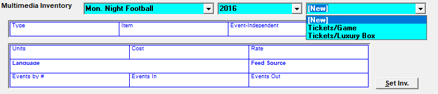
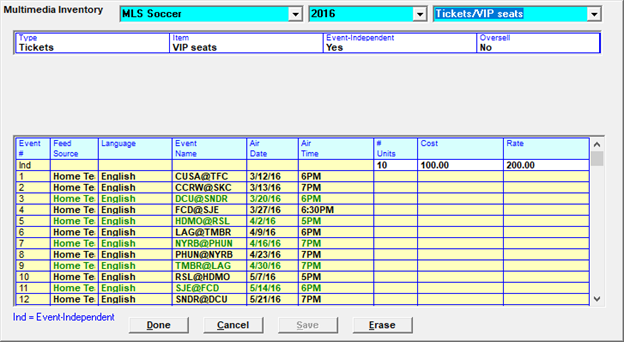
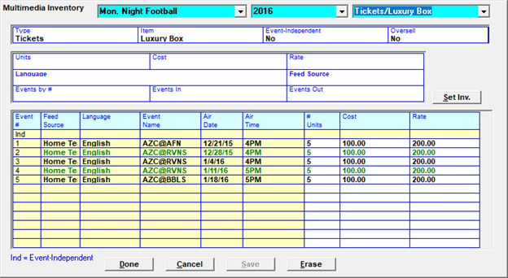
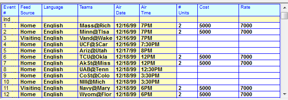

Multimedia
Multimedia items allow you to track inventory, the cost of each item, order items by event schedule, and bill for non-air time inventory. Such items include tickets, hospitality, signage, etc. Multimedia items show on the proposal/order and when they are invoiced, the invoiced amount is maintained in A/R allowing you to post cash, adjustments or journal entries.
Multimedia is defined with the Event Schedule in the Programming screen. The Items are entered for a Proposal or Order through the Multimedia Tab. If the order has air-time spots and NTR/Hard Cost items, the air-time total is shown separate from the NTR/Hard Cost gross totals in the bottom right corner of the Proposal/Order screen. When the proposal/order is printed, the Summary Report will show any items that have been entered.
Setting up Multimedia
In Site Options, on the Options tab, under System Options, check on Multimedia. You will need a key code from support@counterpoint.net:
Defining Multimedia
From the Event Schedule screen, click Multimedia. The vehicle name and season are selected from the top of the screen. The dropdown on the far right is used to select an existing item or enter a new one by pressing “New”.

Creating a New Item or Selecting an Existing item
If selecting an existing item, the first line of the header information box will populate, and you must fill in the remaining info in the lower half of the screen. To enter a new item, select New from the dropdown, tab, and fill in the header information.
- Type- Define what you are selling. There is no limit to the types of items you can sell; tickets, bobble heads, hospitality, etc. You can create a new Type, by selecting New from the dropdown, tab, and fill in the fields
- Item- This describes the type of item you are selling. There is no limit to the amount of Items you have. To create a new Item, select New from the dropdown, tab, and enter the Item’s name.
- Event-Independent Yes/No- This either ties the inventory to specific events on the schedule, limiting the events with which the inventory can be sold, or allows the inventory to be sold for the entire schedule. Signage for example, would only be sold for Home Events, whereas a Program could be sold for any event on the schedule.
- If inventory is Event-Independent (can be sold throughout the schedule) simply indicate the number of items available for each event on the schedule. Define a cost of producing the item, and the rate at which it is sold

- If inventory is not Event-Independent (tied to specific events) you must select the events with which the inventory can be sold. This can be done manually or you can hone in on desired events by selecting a Language, Feed Source, or event range. Click “Set Inv” (Set Inventory) and the number of units defined will populate in the appropriate events

- Oversell Yes/No- Answer Yes if your inventory is unlimited for an item, such as a website banner, or No if your inventory is limited, such as a ballpark sign
- Units- Enter the number of items available per event
- Cost- This is the cost put out to acquire the item, your cost of doing business. This amount will be deducted in triple net revenue reports
- Rate- This is the rate you are charging the advertiser for the item
- Language- If applicable, you can associate this item with a language feed
- Feed Source- You can associate the item with Home or Away events. Physical items such as signage would only be associated with Home events
- Events by #- You can associate an item with a range of events
- Events In/Events Out- You can associate the item with a pattern of events, such as for every two events the item is sold in, the item will not be sold in three
- Set Inv- Set inventory creates the item inventory on the event schedule based on the criteria entered

- Any field in blue can be selected. All items will sort by this column, for example the Teams can all be sorted alphabetically
- Any field that is white, # units, cost or rate can be changed for individual games
When you have entered your entire inventory, click Save.